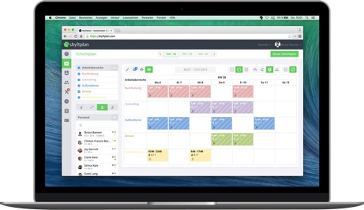
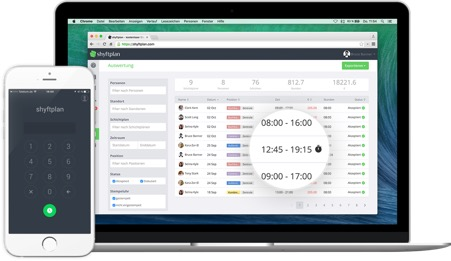
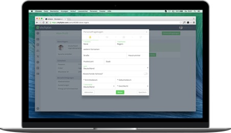

Digitaler Dienstplan
Einer meiner Kunden, ein sehr erfolgreicher und stetig wachsender Anbieter von Kochkursen-, Events und Catering ist beinah vorbildlich in Sachen Modernisierung/Digitalisierung der Administration. Im letzten Jahr haben wir große Themenbereiche gemeinsam bearbeitet und weitgehend digitalisiert:
- Digitaler Dienstplan, Zeiterfassung und Arbeitsprotokolle
- Digitalisierung des Bewerbermanagements
- Digitalisierung der Buchhaltung
Aus meiner Sicht sind das zum einen die drei Bereiche die für Unternehmen in der Branche eine große organisatorische Herausforderung darstellen, auf der anderen Seite sind es auch genau die Bereiche mit großem Potential für Vereinfachung durch Digitalisierung. Warum insbesondere die ersten Bereiche eine Herausforderung darstellen ist klar zu beantworten: es handelt sich um einen Sektor mit vielen Aushilfskräften, und ein Teil der Kräfte arbeitet wiederum im Niedriglohnsektor. Das bedeutet:
Es gibt die verschiedenste Abrechnungsmodelle, verschiedenste Verfügbarkeiten, es gibt häufigen Personalwechsel, es bewerben sich regelmäßig Personen, die aber dann doch nicht immer erscheinen, die Zuverlässigkeit insgesamt ist nicht höchste, die gesetzlichen Anforderungen an die Dokumentation der Einstellung und Abrechnung steigen regelmäßig. Kurz: jede Menge Administrationsaufwand.
Dem Unternehmer war klar, dass das alles in einem wachsenden Unternehmen mit Papier hin- und herreichen nicht mehr zu bewältigen ist. Ebenso wenig wie die Planung von mehreren Events zur gleichen Zeit an verschiedenen Orten, die aus dem gleichen Personalressourcenpool bedient werden, nicht mehr mit Telefonaten, Mails und Tischkalender zu managen ist.
Personalplanung für Events
Da die Eventplanung das Herzstück des Unternehmens ist, haben wir uns zuerst mit diesem Bereich beschäftigt und Ausschau gehalten nach elektronische Unterstützung in Form eines Tools. Unsere Wünsche waren:
- Einfache Handhabbarkeit (bedeutet ehrlicherweise auch modernes ansprechendes User Interface)
- Cloudbasiert
- Mit Apps auf mobilen Devices nutzbar (damit das Personal zeitnahe alle Änderungen erfährt und die Arbeitszeiten einpflegen kann)
- Verschiedene Reports erstellbar
Wir haben uns verschiedene Tools angesehen und unsere Wahl ist auf shyftplan. Shyftplan bietet Dienstplan, Zeiterfassung und Lohnabrechnung aus einem Guss und ist bei weitem nicht nur für die Gastronomie-Branche geeignet.
Ich würde aber sagen, alle Tools gewährleisten eine schnellere Kommunikation zwischen den Mitarbeitern und vor allem eine nahezu papierlose und umweltfreundliche Personalverwaltung. Shyftplan hat uns besonders aufgrund der intuitiven Bedienung und der automatisierten Abrechnungsmöglichkeit angesprochen. Die Umsetzung lässt sich kostengünstig, benutzerfreundlich schnell und einfach in jedem Betrieb bewerkstelligen.
Wir konnten Jan-Martin Josten von shyftplan gewinnen, die Vorteile des Programms näher zu erläutern.
shyftplan – digitaler Dienstplan
Die Personalplanung für den Schichtbetrieb oder die Einsatzplanung der Mitarbeiter für verschiedene Standorte ist für Personaler nichts Neues. Und man muss auch sagen, selbst in kleineren Unternehmen wird diese kaum mehr mit Lineal und Bleistift erstellt.
Aber selbst beim beliebten Allzweckinstrument Excel mit seinen Tabellen und Formeln mangelt es an Übersichtlichkeit und Benutzerfreundlichkeit. Damit das Personal seine Arbeitszeiten einsehen kann, werden die Dateien häufig noch ausgedruckt oder per Mail verschickt, und was vorher auf dem Bildschirm noch ganz ansehnlich wirkte, ist auf Papier für den einzelnen Mitarbeiter eine Katastrophe, zu klein, zu groß, die Hälfte abgeschnitten und gar nicht davon zu reden, wenn nachträgliche Änderungen erforderlich sind. Unklarheiten und Fehler sind da vorprogrammiert.
Digitale Planungssysteme sind die einzig wirkliche Alternative zur wöchentlichen Zettelwirtschaft.
Der erste Ablauf der Einsatzplanung ist am Computer zunächst einmal ähnlich. Der Planer erstellt wie gewohnt einen Dienstplan, durch angepasste Funktionen natürlich schneller und komfortabler und vor allem vollständig digital.
Die Zuteilung des Personals auf die Schichten/Einsatzorte geben die generelle Planrichtung vor. Alle nachfolgenden Schritte sind eine signifikante Verbesserung für jeden Personalplaner:
-
Mit der Veröffentlichung online kann jeder Mitarbeiter seine Dienste einsehen und zwar nicht mehr nur auf der Arbeit, sondern auch von zuhause oder auf mobilen Geräten.
-
Abwesenheit oder Urlaub können direkt an den Planer weitergegeben und Schichten mit Kollegen getauscht werden.
-
Änderungen werden demnach sofort in das System eingetragen und sind für jeden sichtbar.
-
Nichts muss gedruckt werden oder verlässt Computer und Netz, digitale Schichtplanung kann komplett papierfrei und stets aktuell realisiert werden.

Arbeitszeitnachweise – Papier nach Gesetz
Papier findet wirklich noch immer seinen Weg. Selbst wenn wir die Digitalisierung in den Betrieben vorantreiben, entscheidet sich der Staat den Aktenwahn wieder anzufeuern. Mit der Einführung des Mindestlohngesetzes im Jahr 2015 wurden die Dokumente nicht weniger. Das umstrittene Gesetz hat unumstritten den Aufwand der zahlreichen Branchen erhöht, in denen Arbeitszeitnachweise verpflichtend geführt werden müssen.
Viele Plattformen bieten Druckvorlagen für diese Stundenzettel an. Ausgefüllt werden sollen sie von den Arbeitnehmern, um Arbeitsbeginn und -ende, Pausen und damit die effektive Arbeitszeit zu erfassen. Die Führung und Verwahrung der Nachweise bleiben oft an den einzelnen Mitarbeiter hängen. Unternehmen müssen ansonsten zusätzliche Ordner und Akten für die zahlreichen, täglich anfallenden Dokumente führen.
Dabei ist die eigentliche Protokollierung und auch die Aufbewahrung von zwei Jahren digital leicht umsetzbar, denn, der Gesetzgeber verlangt nicht, dass diese Nachweise in Papierform erfolgen müssen. Leider unterliegen viele Menschen noch dem Irrglauben, wenn im Gesetz irgendwo steht „im Original aufzubewahren“, mein das Papier. Dem ist mitnichten so. Aber natürlich gibt es auch für digitale Prozesse und Aufbewahrung Vorschriften und Regeln.
Aus dem Schichtplan von shyftplan lassen sich bereits die Dienstzeiten der einzelnen Arbeitnehmer entnehmen. Da diese aber von der eigentlichen Arbeitszeit durch Pausen, Überstunden oder Krankheitstage abweichen, greift man in der digitalen Personalverwaltung zu einem Instrument, das in der Zeiterfassung schon seit Jahren genutzt wird. Eine Stempeluhr, digital auf Tablets, Smart-Phones und Computer umgesetzt, protokolliert die Arbeitszeit auf die Minute genau.

Der Nachweis selbst wird auf den Servern gespeichert, kann natürlich bei Bedarf gedruckt werden, wird nicht mehr mit der Hand von den Mitarbeitern geführt und ist noch weit länger als die vorgegeben zwei Jahre abrufbar. Die Vorgaben durch den Staat wurden damit nicht nur erfüllt, sie wurden papierlos übertrumpft.
Digitaler Dienstplan und Stammdaten – die Einsparung der Aktenschränke
Personaldaten, wie Namen, Adressen und Gehaltsangaben der Mitarbeiter landen schon seit Excel in Tabellenform auf auch auf den Festplatten. Das ist sicherlich löblich, weil immerhin schon digital, aber ohne Verknüpfung zum Rest der Personalverwaltung nur sehr begrenzt nutzbar.
Wenn für einen Personalplan oder eine Lohnabrechnung zusätzliche Informationen benötigt werden, müssen sie aus verschiedenen Quellen zusammengetragen werden, was immer zeitaufwendig ist.
Dabei lässt sich die Digitalisierung am besten wie ein Verkehrsnetz nutzen. Datenstraßen als Verbindungen zwischen sämtlichen Punkten der Verwaltung, ermöglichen die Weiterverarbeitung von Informationen, ohne dass diese immer wieder neu aus verschiedenen Quellen zusammengeführt werden müssen.
Stellt man sich einen Dienstplan vor, der nicht nur die Arbeitszeiten der Mitarbeiter erfasst, sondern auch Details wie Kontaktdaten, Kontonummer oder den betriebsinternen Fragebogen beinhaltet, würde er gedruckt eine halbe Bürowand einnehmen.
Digital ist diese Vorstellung hingegen umsetzbar, denn der Dienstplan ist mit all diesen Daten verbunden. Die Verknüpfungen lassen sich einfach mit einem Mausklick herstellen und immer dann aufrufen, wenn sie wirklich benötigt werden. Aus dem Griff zum Ordner oder dem Abgleich mit weiteren Tabellen wird eine Bewegung des Fingers.

Schluss mit dem Papierkrieg
Einsatzpläne, Arbeitszeitnachweise und Stammdaten sind nur drei Beispiele, deren Er- und Bearbeitung durch die Digitalisierung drastisch vereinfacht wird. Einsatzpläne werden idealerweise wöchentlich erstellt, die Nachweise für jeden Dienst täglich geführt und Personaldaten ständig aktualisiert.
Der Umzug dieser Daten aus dem Aktenschrank auf den Server spart Druckkosten-, und Zeit ein und gewährleistet Tagesaktualität. Die notwendigen Informationen sind für alle, Personalplaner wie Mitarbeiter auf Knopfdruck, besser Fingertip, verfügbar. Effizienter geht es nicht.
shyftplan ist ein geeignetes Tool, um einen großen Teil der Personalverwaltung aus der analogen Vergangenheit in die digitale Gegenwart zu transformieren.
Weitere Artikel

Digitale Tools für Zusammenarbeit im Office
E-Mail, Digitale Ablage und eine Branchensoftware sind schon lange nicht mehr genug für effiziente Zusammenarbeit. Doch bevor Sie sich in einem Dschungel an digitalen Werkzeugen verlieren, sollten Sie sich über die Systematik …

Veränderung braucht Gewohnheit
Sowohl im Berufs-als auch im Privatleben sind wir ständig im Veränderungsmodus. Manche Veränderungen wollen wir umsetzen, manche müssen wir mitmachen. Wir alles wissen, dass Veränderung nie leicht sind und je länger wir etwas auf …